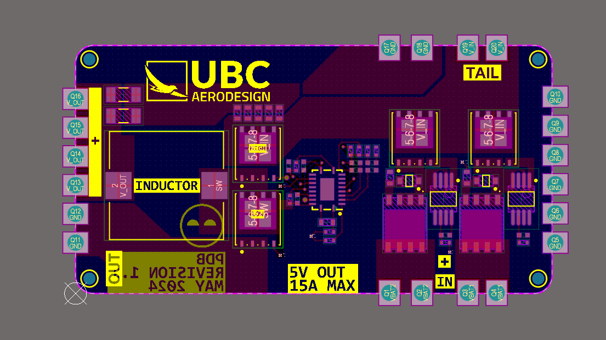
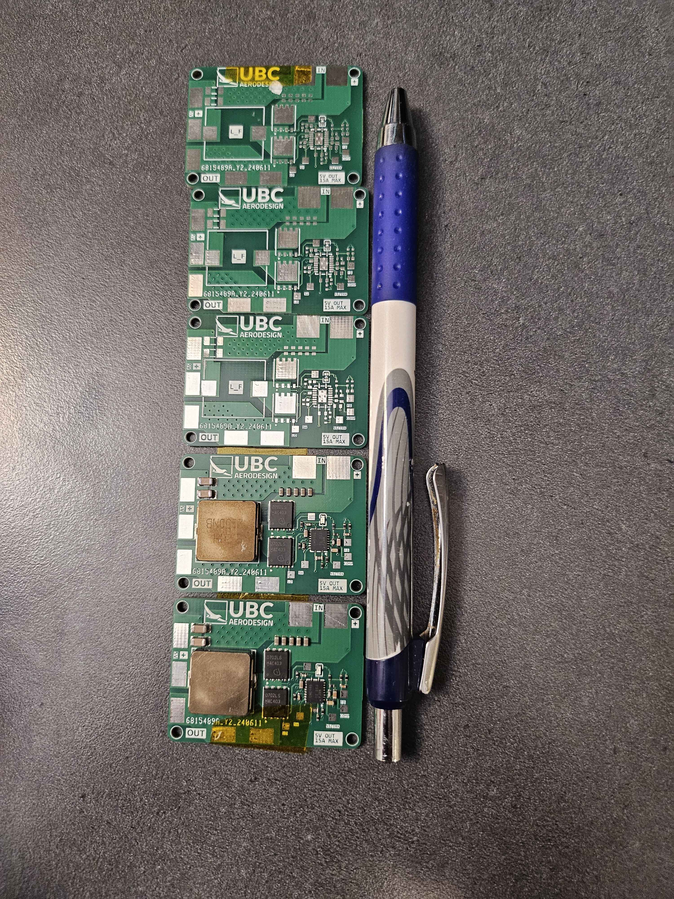

UBC AeroDesign Power Distribution Board
Learning
- DC-DC converter design and topologies.
- PCB design, manufacturing, and testing.
Project Overview
As part of my role on the avionics team at UBC AeroDesign, I designed a power distribution board used for stepping down the voltage from a main 30V battery to a 5V output that powers the sensors and communications systems of a fixed-wing plane. The board was designed using Altium EDA.
Background
A buck converter is a type of electronic power circuit that is able to convert a higher input voltage into a lower output voltage; it is one of the most popular topologies in power electronics. The circuit is fairly simple: the main components are a switch, an inductor, and an output capacitor.
A buck converter is able to turn a higher voltage input into a lower voltage output using a switch that is rapidly turned on and off.
If, for a given period of time, the switch is on for 50% of the time, the output voltage will as a consequence be
50% of the input voltage. This percentage of time that the switch is on compared to the period is called the duty cycle, and the method of controlling the output through
rapidly turning on and off a switch is called PWM, or pulse-width modulation. Practically, an actual switch is not used. Instead, a transistor such as a MOSFET or a BJT serve as the switch.
While the switch is open, the voltage at the output will drop to 0. As the switch is turned on and off, the output voltage will swing rapidly between the input voltage level and 0. To maintain
a constant voltage and current, an LC filter is implemented at the output. The inductor resists changes in current and develops a back-EMF to keep current flowing steadily, while the capacitor
will oppose changes in voltage by sourcing or sinking current to keep the output voltage constant.
With this current implementation, there's nowhere for the inductor current to flow when the switch opens. A Schottky diode is added between ground and the inductor's input side to give the current a path to keep flowing.
Buck converters are often used in power electronics due to their high efficiency, as the voltage is stepped down
through the use of PWM switching instead of through resistors, where the voltage is dissipated as heat. Moreover, buck converters can step voltage down to a wide range of output voltages from
a wide range of input voltages.
Design and Manufacturing
To select the buck converter IC best suited to our requirements, I used a weighted decision matrix to rank a list of candidates. Every IC had to step down
a 30V input down to 5V at 10A, in line with the plane's power requirements. Cost, availibility, and footprint size also had to be weighted. The matrix allowed me to
quantitiatvely rank each option and gave me a clear justification to present to my team. I ended up choosing the Texas Instruments LM5146.
Following the datasheet, I calculated several values needed to design the buck converter circuit: the duty cycle, the inductor ripple current, the switching frequency, the peak switch,
diode, and inductor currents, and the minimum inductance required.

The final design includes an input current protection circuit, MOSFETs to handle the switching (driven by the IC over a PWM signal), and castellated edges for soldering the buck converter PCB onto a larger board. Via stitching was used to minimize impedance for return currents, and polygon pours were used extensively for routing power as it improves current-carrying capacity and heat dissipation.

For initial testing, I removed the protection circuits and the castellated edges to improve on cost. The components were soldered using a reflow oven. Using an oscilloscope, I measured the converter's input and output waveforms and used those measurements to calculate an overall efficiency.